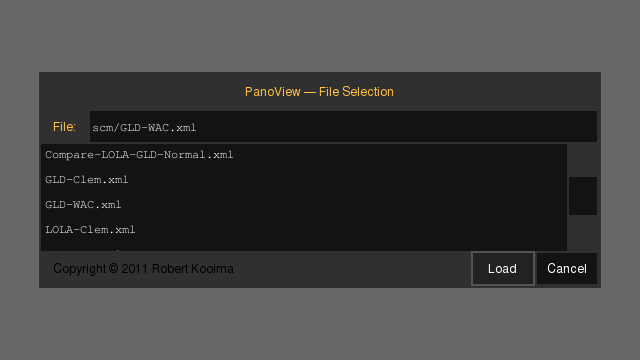
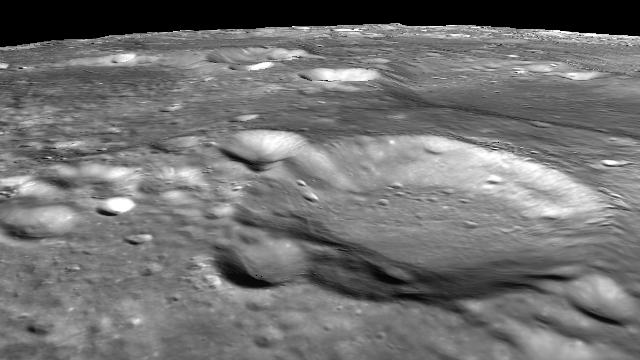
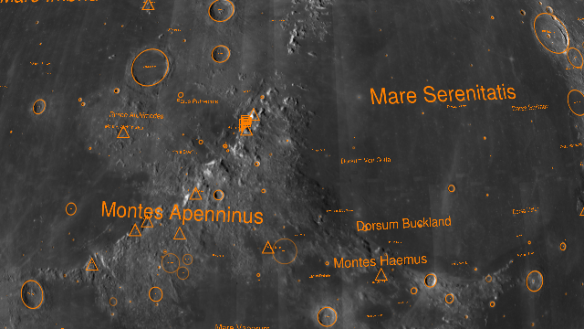

© 2012 Robert L. Kooima — kooima@csc.lsu.edu
This document describes the use of the Orbiter real-time planetary visualization package and a few of the details of the spherical cube map (SCM) data file format that supports it. Orbiter is implemented using the Thumb framework, and pertinent aspects of Thumb are also documented here.
The Orbiter application may be run from the command line or double-clicked in the Finder or Explorer. Under many circumstances, launching Orbiter from the command line is best.
./orbiter
There are a number of display modes configured in the default host definition file data/host/common.xml. One of these configurations may be selected on the command line. For example, HD resolution:
./orbiter 1920x1080
… or left-right stereoscopic display on a 3D HDTV:
./orbiter 1920x1080-LR
… or fulldome using a 1024 × 768 projector::
./orbiter fulldome-1024x768
Orbiter presents a menu of prepared visualizations to be browsed, selected, and loaded.

Note, this is not a list of available data files. A planetary visualization is usually a composition of several distinct data sets in SCM TIFF format, and the Orbiter file selection dialog lists the XML files that define these visualizations. The XML files are found in the data/scm directory in the Thumb distribution, and are described below.
Loading a visualization closes the selection dialog and displays the planet. Here, we've selected GLD-WAC.xml and zoomed in a bit, as described next.
The default mechanism for interaction with Orbiter uses the keyboard and a two-button mouse.
| Button | Function | |
|---|---|---|
| Left Mouse | … | Click and drag to change view position (rotate the planet). |
| Right Mouse | … | Click and drag to change view altitude |
| Shift Left Mouse | … | Click and drag to change view direction (rotate the camera). |
| Shift Right Mouse | … | Click and drag to change lighting direction. |
Not all visualizations support dynamic lighting, so the effects of shift-right-click might not always be apparent.
Informational overlays and debug views may be toggled using function keys. The File Selection toggle allows the visualization to be changed at any time. The camera path display enables camera script editing. The label toggle displays information for over 8000 craters on the moon. The remaining displays are mostly for debugging the 3D renderer, but they do also look cool.
| Key | Function | |
|---|---|---|
| F1 | … | Toggle the File Selection dialog. |
| F2 | … | Toggle cache overlay. |
| F3 | … | Toggle the label display. |
| F4 | … | Toggle the camera path display. |
| F5 | … | Toggle wireframe display. |
| F6 | … | Toggle the bounding volume display. |
Orbiter allows the position and orientation of the camera to follow a pre-determined path, determined by a series of key frames. These key frames are specified interactively and keyboard commands insert or append the current camera configuration to a storable list of camera configurations. These key frames are animated using Hermite interpolation. The camera path visualization is toggled using the F4 key. Here is an example:
The orange squares denote key frames and the green line shows their interpolation. The green key square is the first and the red key square is the last. The yellow key square indicates the current key frame selected for editing. The small green dots indicate the speed of the path, with each dot representing one quarter of a second.
| Key | Function | |
|---|---|---|
| Control-A | … | Add the current camera position into the path after the current key. |
| Control-I | … | Insert the current camera position into the path before the current key. |
| Control-O | … | Overwrite the current camera position onto the current key. |
| Control-D | … | Delete the current key from the path. |
| Control-N | … | Select the Next path key. |
| Control-P | … | Select the Previous path key. |
| Control-R | … | Rewind the current key and the play-back position to the beginning. |
| Control-J | … | Jump the camera to the current key position. |
| Control-F | … | Play the path Forward from the current play-back position. |
| Control-B | … | Play the path Backward from the current play-back position. |
| Spacebar | … | Stop play-back. |
| Control-S | … | Save the path to a file. |
| Control-L | … | Load the path from a file. |
| Control-C | … | Clear the path, removing all keys. |
| Up | … | Increase the camera speed at the current key. |
| Down | … | Decrease the camera speed at the current key. |
| Control Up | … | Increase the tension of the camera path following the current key. |
| Control Down | … | Decrease the tension of the camera path following the current key. |
| Shift Up | … | Shift the bias of the camera path toward the next key. |
| Shift Down | … | Shift the bias of the camera path toward the current key. |
Some tips:
To prepare a camera path, navigate normally and press Control-A at each point of interest. This will append each point to the list, moving the current selection forward with each addition.
Press Control-R to rewind to the beginning and press Control-F to animate the path forward.
Gain some altitude or distance to see an overview of the path.
If a particular key frame is bad or wrong, select it using Control-P and Control-N, press Control-J to jump to that view point, and adjust the camera interactively. When the view point is improved, press Control-O to overwrite the current position onto the bad key frame.
This gets easier with practice. Always try to be aware of which key is current. The path visualizion is updated as it is edited, so keep an eye on subtle changes down the line caused by local modifications. It often helps to work backwards.
Cubic interpolation can give unexpected results, particularly before and after wide gaps between keys. Path tension adjustments can help, but do plan ahead.
Press Control-S to save the current path to disk, or Control-L to load it from disk. Note: There is currently no file name selection dialog for path storage. The file is always named path.xml. It is found in the Thumb user filesystem, usually in ~/.thumb/, but failing that in the current working directory. If you wish to store multiple path files, please use the Finder or Explorer to rename path.xml by hand after saving, or before loading.
Once a suitable path has been defined, it may be rendered to an image sequence.
| Key | Function | |
|---|---|---|
| Shift-Control-F | … | Record the path Forward from the current play-back position. |
| Shift-Control-B | … | Record the path Backward from the current play-back position. |
This will produces a series of PNG files in the current working directory named frame00000.png, frame00001.png, etc, representing a 30-frame per second animation of the path. This may take some time. Unlike during interactive rendering, Orbiter takes the time to ensure optimal image quality. It waits for each necessary page of SCM data to be fully loaded from disk into VRAM before rendering and storing each frame.
If the path play-back is stopped for any reason, the recording stops as well.
Thumb configuration options reside in the file data/conf.xml.
The cache size option limits the total number of SCM pages that may be loaded simultaneously. It allows the renderer to be tuned to make maximal use of available GPU resources and thus impacts the behavior and performance of the renderer. As the cache is two-dimensional, the exact page count is the square of the cache size. Thus, the default, 16, allows 256 pages per cache.
<option name="scm_cache_size">16</option>
The report host option gives the host name (or dotted quad) and port number of a host waiting to receive a streaming report of the renderer's current view position. This port will receive a single UDP packet per frame containing an ASCII string giving the longitude and latitude of the view position in degrees and the radius of the viewpoint in meters. This string is terminated by a newline and a null byte.
<option name="orbiter_report_host">127.0.0.1</option> <option name="orbiter_report_port">8111</option>
The joystick options select the joystick device number, axis indices for the X and Y axes, button numbers for motion up and down, and a deadzone size (0.0 to 1.0) for analog gamepads with unreliable centering.
<option name="orbiter_joystick_device">0</option> <option name="orbiter_joystick_axis_X">0</option> <option name="orbiter_joystick_axis_Y">1</option> <option name="orbiter_joystick_button_U">0</option> <option name="orbiter_joystick_button_D">1</option> <option name="orbiter_joystick_deadzone">0.25</option>
The icon size option selects the size of the icons used in feature labeling, in pixels. Increasing this value will make these icons more visible on large, high-resolution displays. For best quality, use a power of two.
<option name="orbiter_icon_size">16</option>
The goto radius option selects distance from the planet to which the camera moves during a goto operation. If set to zero, then the midpoint of the starting and ending positions is used.
<option name="orbiter_goto_radius">2000000.0</option>
The shell environment variable SCMPATH lists directories where SCM TIFF files may be found. Set this variable in the shell resource file just as one might set the shell path, separated by colons. (Or semi-colons under Windows, as C: is a valid part of a Windows path.) For example,
export SCMPATH=/share/scm:$HOME/Data/scm:.
The environment variable SCMINIT optionally gives the name of a visualization definition file to be loaded immediately upon launch. If specified, Orbiter will not present the file selection dialog and will instead proceed directly to displaying the named file. For example,
export SCMINIT=scm/GLD-WAC.xml
The planet visualization definition file lists the SCM files that comprise each visualization, as well as the parameters of the planet and the mechanisms of its rendering. An understanding of these files is not necessary for basic use of Orbiter, but if customized visualizations are to be created then the file's contents must be understood. For a complete accounting of this file format, see the full SCM TIFF documentation.
Planet definition XML files appear in an abstract file system used by the Thumb framework. To be visible to Orbiter, they must be placed in the data directory within the application directory, or in one of the directories listed in the THUMB_RO_PATH environment variable. These files need not be stored along side the SCM TIFF files that they reference.
Here is an example of a basic planet definition, GLD-WAC.xml.
<?xml version="1.0"?>
<sphere radius="1737400.0"
mesh="32"
size="426"
vert="glsl/scm-displace.vert"
frag="glsl/scm-basic.frag">
<cache n="426" c="1" b="8" threads="2"/>
<cache n="426" c="1" b="16" threads="2" r0="0.994728" r1="1.0062" />
<frame>
<image name="height" scm="DTM-426-6.tif" cache="1" height="1"/>
<image name="color" scm="WAC-426-6.tif" cache="0" />
</frame>
<step name="Tycho"
label="csv/Tycho.csv"
q0=" 0.762239" q1="-0.085507" q2="-0.161517" q3=" 0.620961"
p0="-0.159228" p1="-0.719553" p2=" 0.675936" r="1794686.446486" />
<step name="Copernic"
label="csv/Copernic.csv"
q0=" 0.089011" q1="-0.228597" q2="-0.496265" q3=" 0.832792"
p0="-0.357236" p1=" 0.156369" p2=" 0.920832" r="1991161.296438" />
</sphere>
The file begins with an XML header and contains a single root sphere element with several attributes and one image sub-element for each SCM TIFF image.
The mesh attribute determines the tessellation of the geometry mesh used to render each page of data. The example value, 32, indicates that each page of the sphere will be rendered using a 32 × 32 grid of squares.
The radius attribute determines the base radius of the sphere, in meters. In this example, the moon has a radius of 1737000 meters.
The size attribute gives the size of each page in the referenced SCM TIFFs. Note that the value coincides with the image parameters given by the SCM file names. Other values are allowed, and may enable quality-speed tradeoffs.
The vert and frag attributes give the vertex and fragment programs to be used by the renderer, named relative to the root of the Thumb data hierarchy. In this case, the “displacement” vertex shader is used to render displacement-mapped terrain, and the “basic” fragment shader is used to apply a simple image to the resulting surface. These attributes will remain the same for most planet definitions, though different lighting models, overlay modes, and data visualizations may be introduced using alternate shaders.
The cache elements define data storage for image data to be stored. Each cache is defined by the size and type of data that it can store, and includes optional configuration for loader thread configuration and height map normalization.
The frame elements group images into separate visualizations which can be individually selected within the application.
The image elements name the actual SCM data files. In this example, DTM-426-6.tif gives a Digital Terrain Model, which acts as a height map. Because it serves to modify the geometry of the spherical mesh, it is fed to the vertex shader and its normalized minimum and maximum radii are provided as attributes. WAC-426-6.tif is a simple image file fed to the fragment shader. Each image has a name that identifies it the rendering shader, and each includes the index of a cache capable of storing it.
The step elements define the view parameters for regions of interest for use by the go-to mechanism. These are the exact same data structure as found in the path.xml file used by the camera path storage mechanism.
Here's another example, NAC_ROI.xml, that includes two high-resolution overlays configured as separate frame elements. Note in this case that the path elements include frame indices, which cause the visualization to be automatically selected when a go-to is activated
<?xml version="1.0"?>
<sphere radius="1737400.0"
mesh="32"
size="336"
vert="glsl/scm-displace.vert"
frag="glsl/scm-overlay.frag">
<cache n="426" c="1" b="8" threads="2"/>
<cache n="336" c="1" b="8" threads="2"/>
<cache n="426" c="1" b="16" threads="2" r0="0.994728" r1="1.0062" />
<frame>
<image name="height" scm="DTM-426-6.tif" height="1" cache="2" />
<image name="base" scm="WAC-426-6.tif" cache="0" />
<image name="over" scm="NAC_ROI_TychoCtrLoA-336-14.tif" cache="1" />
</frame>
<frame>
<image name="height" scm="DTM-426-6.tif" height="1" cache="2" />
<image name="base" scm="WAC-426-6.tif" cache="0" />
<image name="over" scm="NAC_ROI_Apollo16HiA-336-14.tif" cache="1" />
</frame>
<step name="Tycho"
frame="0"
label="csv/Tycho.csv"
q0=" 0.762239" q1="-0.085507" q2="-0.161517" q3="0.620961"
p0="-0.159228" p1="-0.719553" p2=" 0.675936" r="1794686.446486" />
<step name="Apollo16"
frame="1"
label="csv/IAUMOON.csv"
q0=" 0.106962" q1=" 0.140275" q2="-0.017893" q3="0.984155"
p0=" 0.263982" p1="-0.156004" p2=" 0.951828" r="1737876.083148" />
</sphere>
Orbiter supports a “go-to” mechanism that allows an external application to programmatically direct the view point to one of the regions of interested given in the planet definition XML file.
Go-to messages are received on port 2829. Each message consists of a single UDP datagram containing an ASCII name string which is matched against the name attribute of the step element. Only the first eight characters of this string are used.
For example, a message meeting these requirements can be generated using the command line tool ncat as follows:
echo -n "Copernic" | ncat -u --send-only 127.0.0.1 2829
Upon message receipt, the renderer interpolates the viewpoint to the selected position using the same internal mechanism as the camera path definition. Note, therefore, that the receipt of a go-to message will replace any currently-loaded camera path definition. Likewise, after a go-to has executed, its path remains and may be reviewed, modified, and stored using the camera path editing interface.
This commonality may be exploited, and points of interest may be defined simply by copy-pasting step elements from path.xml into the planet definition XML. The q attributes give the view orientation in the form of a quaternion, the p attributes give the view position as a normalized direction vector, and the r attribute gives the view radius, or distance from the center of the sphere. A path file step element also includes light source direction and path tension and bias, which do retain their meaning when used by the go-to mechanism. This can be desirable or not, and in most cases these extra attributes should simply be omitted when pasted.
Surface features may be labeled and outlined.
These labellings are defined using Comma-Separated Value (CSV) files, which may be edited with most any spreadsheet program or text editor. Text is encoded using UTF8, which enables the use of accents and foreign characters. The image above shows 8990 sites acknowledged by the IAU. The first few lines of this file are as follows:
"Abbot",5.5157114264,54.7073670159,10404.3,1736106.29688,AA "Abel",-34.4365372844,85.4191847678,119437.0,1734978.15625,AA "Tiling",-52.9059642528,226.8524033223,38230.0,1733504.9375,AA "Abenezra",-21.0078405096,11.8763800960,43188.7,1737983.65625,AA "Perepelkin P",-12.4460507308,127.2385632171,23478.0,1740759.25,SF
Each line defines one feature with six attributes: the name in double quotes, the center latitude in degrees, the center longitude in degrees, the diameter of the feature in meters, distance from the center of the planet in meters, and a pair of characters giving the IAU type of the annotation, which determines how the annotation is drawn.
| AA | … | Crater, drawn as a circle of the given diameter. |
| SF | … | Satellite feature, drawn as a dim circle of the given diameter. |
| MO | … | Mountain or range, drawn as a triangle icon |
| LF | … | Landing site feature, drawn as a flag icon |
| all others | … | Drawn with label only |
In addition, the following additional type designations are provided, which are not recognized by the IAU. They begin with an “at” symbol to ensure that they don't conflict.
| @* | … | Star icon |
| @C | … | Circle icon |
The diameter attribute determines the size of the label text. The radius attribute determines the altitude of the annotation, which is necessary for good alignment of small features. Do be advised that longitude and latitude values must be specified with at least five digits behind the decimal point to be correctly positioned to within one meter (on the scale of the moon). Many data sources provide less.
Upon receipt of a go-to message, the renderer replaces the current label set using the CSV file given by the label attribute of the step element. This may be used to mark points of interest within the defined region, such that they are automatically updated as destinations are selected.
This is a list of issues to be aware of, should unexpected behavior arise.
If the definition files are not visible in the Orbiter file selector, then be sure they are located within the Thumb data hierarchy, or add their location to the Thumb data hierarchy by including the path in the THUMB_RO_PATH environment variable.
If the definition file loads but does not display an image, be sure the path to the SCM TIFF files appears in the SCMPATH environment variable.
If performance is bad, be sure that SCM TIFF files are not being accessed from a network share. Also check that scm_cache_size is not too large.
If the application exits unexpectedly, it will most likely have printed an error message to the standard error stream. Under Windows, this information will be redirected to the file stderr.txt. This may prove informative.
If the renderer emits error messages about “implementation limits” on “active samplers” then you're probably running OS X, which places artificial limits on the usable number of texture image units. High resolution visualizations will not run. Windows and Linux do not impose these artificial limits, even on the same hardware.
Planetary data sets are usually made available as a large equirectangular image files, but for real-time display, these images must be pre-processed into an optimized intermediate format that maximizes sampling uniformity across the entire sphere. This format is called a spherical cube map or SCM. The basic layout of an SCM resembles the cube map texture commonly used in real-time 3D graphics: it is represented by six square images, one for each face of a cube. However, while the common cube map texture maps sphere positions onto image pixels using a straightforward linear mapping, the spherical cube map uses a spherical mapping that helps equalize the solid angle subtended by each image pixel.
To enable the zooming of high resolution imagery at interactive rates, each face of the spherical cube map is subdivided into a quad-tree hierarchy. To enable seamless linear magnification filtering across this discontinuous image representation, each page is stored with a 1-pixel border. Special care is taken to ensure that this border wraps correctly around the edges of the base cube.
Because the resulting spherical image is represented by a number of sub-images, a multi-page image file format is required, and TIFF is chosen. Spherical cube map pages are enumerated in the TIFF file in breadth-first order, which gathers low-resolution base imagery to the front of the file and provides increasing resolution with increasing file length.
The resolution of a spherical cube map image is determined by two values, the size of each square page in pixels, and the depth of the quad-tree subdivision. A spherical cube map image of depth d will contain 22d + 3 - 2 separate pages. The current renderer has a maximum depth of 7. The number of pages for several values of d is shown here. Note the obvious fact that a cube map with zero subdivisions has six pages.
| d | 0 | 1 | 2 | 3 | 4 | 5 | 6 | 7 |
| n | 6 | 30 | 126 | 510 | 2046 | 8190 | 32766 | 131070 |
A spherical cube map's page size impacts out-of-core data access performance, and values around 512 are usually best. Given a spherical cube map with page size s and depth d, the effective resolution of the equivalent equirectangular projection is 4·s·2d × 2·s·2d. Given a base page size of 512, the effective resolution of a spherical cube map for each depth d is
| d | 0 | 1 | 2 | 3 | 4 | 5 | 6 | 7 |
| width | 2048 | 4096 | 8192 | 16384 | 32768 | 65536 | 131072 | 262144 |
| height | 1024 | 2048 | 4096 | 8192 | 16384 | 32768 | 65536 | 131072 |
A simple file naming convention that includes the SCM data parameters has been of great help in keeping SCM data organized. Here are a few examples:
WAC-426-6.tif
LDEM-360-8.tif
NAC_ROI_APOLLO16HIA-336-14.tif
The SCM TIFF image WAC-426-6.tif was generated from Lunar Reconnaissance Orbiter Wide Angle Camera imagery with a global resolution of 100 meters per pixel. Given a lunar radius of 1737400 meters, that's 108969 pixels around the equator. With size 426 and depth 6, WAC-426-6.tif has an effective resolution of 109056 × 54528 pixels, which is just enough to represent the source data completely. Likewise, LDEM-360-8.tif gives Lunar Digital Elevation Model data derived from the Lunar Orbiter Laser Altimeter resampled to a global resolution of 368640 × 184320.
With a depth of 14, NAC_ROI_APOLLO16HIA-336-14.tif would appear to provide a huge image, however it covers only the Narrow Angle Camera Region of Interest surrounding the landing site of Apollo 16. It does give data with an SCM depth of 14, which works out to 0.5 meters per pixels, however it does so over a very small area.